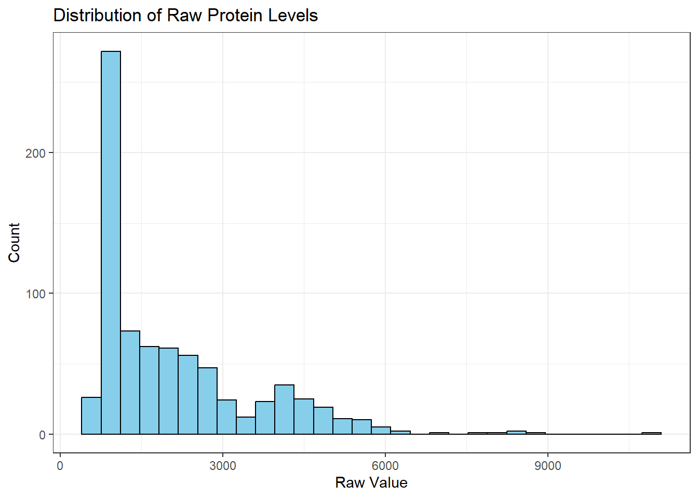

flowchart TD
A[1,125 Proteins<br/>After Quality Check, Preprocessing, Standardizing] --> B[T-test Analysis]
A --> C[Random Forest<br/>1,000 iterations]
A --> D[Correlation with<br/>ADOS Scores]
B --> E[Top 10 Proteins<br/>by p-value]
C --> F[Top 10 Proteins<br/>by MeanDecreaseGini]
D --> G[Top 10 Proteins<br/>by Correlation]
E --> H[Intersection]
F --> H
G --> H
H --> I[5 Core Proteins<br/>MAPK14, IgD, DERM,<br/>EPHB2, suPAR]
E --> J[13 Remaining<br/>Proteins]
F --> J
G --> J
J --> K[Logistic Regression with 5 core and 1 of the 13<br/>Protein that increased AUC gets added]
I --> K
K --> L[Final Panel:<br/>9 Proteins<br/>5 Core + 4 Additional]
L --> M[Logistic Regression<br/>1,000 x 80/20 splits]
M --> N[AUC = 0.860<br/>Sensitivity = 0.833<br/>Specificity = 0.846]
style I fill:#e1f5ff
style L fill:#ffe1e1
style N fill:#e1ffe1
Biomarkers of ASD
Recreating Results Hewitson Blood Biomaker For Autism Spectrum Disorder
Use this as a template. Keep the headers and remove all other text. In all, your report can be quite short. When it is complete, render and then push changes to your team repository.
Abstract
This report evaluates the robustness of proteomic biomarker discovery for autism spectrum disorder (ASD) by replicating and extending the analysis of Hewitson et al. (2021). We examined how preprocessing decisions, outlier handling, and variable selection strategies affect classifier performance using multiple testing, random forest, and logistic regression approaches. Analysis of raw protein distributions revealed extreme right-skewness justifying log transformation. Outlier analysis without trimming showed 152 of 154 subjects had at least one protein exceeding 3 standard deviations, distributed equally between ASD (\(n=75\)) and TD (\(n=77\)) groups, though six subjects (4 TD, 2 ASD) exhibited extreme patterns with \(\ge 100\) outlying proteins. Methodological variations including train-test splitting and expanded feature sets (20 vs 10 proteins) decreased sensitivity from 0.875 to 0.812 but improved specificity \((0.800 \rightarrow 0.867)\) and AUROC \((0.908 \rightarrow 0.946)\). [question 4 here]. These findings underscore the importance of rigorous validation strategies in biomarker discovery pipelines.
Dataset
Write a brief data description, including: how data were obtained; sample characteristics; variables measured; and data preprocessing. This can be largely based on the source paper and should not exceed 1-2 paragraphs.
Data for this analysis were obtained from Hewitson et al. (2021), who conducted a proteomic analysis of serum samples to identify early biological markers for autism spectrum disorder (ASD). The study enrolled 154 male pediatric subjects aged 18 months to 8 years: 76 boys with ASD (mean age 5.6 ± 1.7 years) and 78 typically developing (TD) boys (mean age 5.7 ± 2.0 years) and the serum samples were obtained via a fasting blood draw. All ASD subjects were assessed using the Autism Diagnostic Observation Schedule (ADOS) and Autism Diagnostic Interview-Revised (ADI-R), with ADOS total scores providing a continuous measure of symptom severity. A total of 1,317 proteins were initially measured from each sample, however 192 proteins failed quality control so at the end 1,125 proteins were analyzed.
Initially, the data was normalized by applying the \(\log\) transformation. Following this, the data was centered and scaled, this also helped to address the outliers. Any z-transformed values less that \(-3\) or greater than \(3\) were clipped away. This report evaluates the impact of clipped the outliers by including them and tryin to classify the subjects. This preprocessing ensured the data were standardized before subsequent computational methods were deployed such as the t-test, random forest, and logistic regression.
Summary of published analysis
Hewitson et al. (2021) employed a multi-method approach combining statistical testing, machine learning, and correlation analysis to identify a biomarker panel for ASD. Three independent selection methods were used to identify the top-10 most predictive proteins from 1,125 candidates. First, t-tests were performed to identify proteins with significantly different serum levels between ASD and TD groups, selecting the 10 proteins with the lowest p-values. Second, a random forest (RF) model was trained 1,000 times, and the 10 proteins with the highest averaged MeanDecreaseGini importance scores were selected. Third, correlation analysis identified the 10 proteins most strongly associated with ADOS total scores, which measure ASD symptom severity.
Note, the correlation analysis between the protein had some complication which resulted in redaction of this paper.
The final biomarker panel was constructed by first identifying the intersection of these three top-10 protein lists, yielding 5 “core” proteins common to all methods: MAPK14, IgD, DERM, EPHB2, and suPAR. To optimize predictive performance, each of the remaining 13 proteins from the three methods was evaluated for additive predictive power using logistic regression. Four additional proteins (ROR1, GI24, eIF-4H, and ARSB) improved the area under the curve (AUC) when added to the core set. The final 9-protein panel achieved AUC = \(0.860 \pm 0.064\), with sensitivity = \(0.833 \pm 0.118\) and specificity = \(0.846 \pm 0.118\), evaluated through 1,000 iterations of 80/20 train-test splits. Follow the figure below for a clearer roadmap.
Findings
Summarize your findings here. I’ve included some subheaders in a way that seems natural to me; you can structure this section however you like.
Justifying Preprocessing
To assess the impact of preprocessing and outliers it is important to know why the choices were made in the study. To justify the log transformation we must look at the distribution of the samples of raw values.

Raw protein levels exhibited extreme right-skewness with values spanning several orders of magnitude. \(\log\) transformation was applied to stabilize variance and normalize distributions, making them more suitable for parametric statistical methods such as t-tests and logistic regression. This transformation is standard in proteomic analyses where protein abundances naturally follow log-normal distributions due to multiplicative biological processes. Thus, using the log-transformation on the protein levels educes skewness to make the distribution approximately normal and stabilizes variance, helping the data to meet model assumptions.
Impact of Outliers
To see the impact of outliers we must identify the outliers and see whether we can infer anything about the subjects that are classified as outliers and comment on those. For the code to remove the trim refer to the Appendix. First let’s figure out the outliers and see whether there is any similarities between the outliers by looking at their summary statistics.
| group | mean_outliers | median_outliers | sd_outliers | min_outliers | max_outliers | n_subjects |
|---|---|---|---|---|---|---|
| ASD | 13.42667 | 9 | 19.89307 | 1 | 126 | 75 |
| TD | 17.81818 | 9 | 29.36823 | 1 | 157 | 77 |
The summary statistics reveal that outliers were nearly equally distributed between diagnostic groups, with ASD subjects averaging 13.42 outliers and TD subjects averaging 17.82 outliers (Table 1). Both groups showed similar variability (standard deviations of 19.89 and 29.37, respectively), suggesting that outlier patterns are not systematically different between ASD and TD populations. However, the maximum values indicate that a small number of subjects in both groups exhibited extreme outlier patterns, with some subjects having over 100 outlying protein measurements.
To visualize these patterns, we examined the distribution of outlier counts across subjects and identified those with extreme outlier profiles.
Methodological variations
Task 3
Improved classifier
Task 4
Appendix
Required Packages And Data Loading
Code
# load any other packages and read data here
library(tidyverse)
library(dplyr)
# get names
var_names <- read_csv('../data/biomarker-raw.csv',
col_names = F,
n_max = 2,
col_select = -(1:2)) %>%
t() %>%
as_tibble() %>%
rename(name = V1,
abbreviation = V2) %>%
na.omit()Code for Justifying the Preprocessing and Outliers
Code
# Read in biomarker data
biomarker_raw <- read_csv("../data/biomarker-raw.csv", skip = 1)
# Rename the first column for clarity
biomarker_raw <- biomarker_raw %>%
rename(group = 1) %>%
filter(!is.na(group)) # remove any rows without a group label
# Inspect a random sample of 5 protein columns
set.seed(102625)
sample_proteins <- sample(names(biomarker_raw)[-1], 5)
# Plot raw distributions for a sample of proteins
biomarker_raw %>%
pivot_longer(cols = all_of(sample_proteins),
names_to = "protein",
values_to = "level") %>%
ggplot(aes(x = level)) +
geom_histogram(bins = 30, fill = "skyblue", color = "black") +
labs(title = "Distribution of Raw Protein Levels",
x = "Raw Value",
y = "Count") +
theme_bw()
Code
# read in data
biomarker_dirty <- read_csv('../data/biomarker-raw.csv',
skip = 2,
col_select = -2L,
col_names = c('group',
'empty',
pull(var_names, abbreviation),
'ados'),
na = c('-', '')) %>%
filter(!is.na(group)) %>%
# log transform, center and scale, and trim
mutate(across(.cols = -c(group, ados),
~scale(log10(.x))[, 1])) %>%
# reorder columns
select(group, ados, everything())
# export as r binary
save(list = 'biomarker_dirty',
file = '../data/biomarker-notrim.RData')
notrim = get(load('../data/biomarker-notrim.RData'))The above code chunk is included in the report just to show the push of a new dataset in the repository which was done in one of the scripts. We will be loading the notrim dataset directly for the purposes of this report.
Code
load("../data/biomarker-notrim.RData")
library(knitr)
# Step 1: Create numeric-only dataset
notrim2 <- biomarker_dirty %>%
select(-c(group, ados))
# Step 2: Detect outliers (|z-score| > 3)
outlier_detection <- function(df){
result <- which(abs(df) > 3)
return(result)
}
# Step 3: Apply to all protein columns
indices <- lapply(notrim2, outlier_detection)
# Step 4: Get unique subjects with outliers
unique_indices <- unique(unlist(indices))
# Step 5: Count outliers per subject
not_unique_indices <- unlist(indices)
counts_outliers <- table(not_unique_indices)
# Now create the dataframe with subject info
notrim_with_id <- biomarker_dirty %>%
mutate(subject_id = row_number())
# Count outliers per subject with group info
outlier_counts_df <- data.frame(
subject_id = as.numeric(names(counts_outliers)),
n_outliers = as.numeric(counts_outliers)
) %>%
left_join(
notrim_with_id %>% select(subject_id, group),
by = "subject_id"
)
# Summary statistics by group
outlier_summary <- outlier_counts_df %>%
group_by(group) %>%
summarise(
mean_outliers = mean(n_outliers),
median_outliers = median(n_outliers),
sd_outliers = sd(n_outliers),
min_outliers = min(n_outliers),
max_outliers = max(n_outliers),
n_subjects = n()
)
kable(outlier_summary, caption = "Summary statistics of outlier counts by diagnostic group.")| group | mean_outliers | median_outliers | sd_outliers | min_outliers | max_outliers | n_subjects |
|---|---|---|---|---|---|---|
| ASD | 13.42667 | 9 | 19.89307 | 1 | 126 | 75 |
| TD | 17.81818 | 9 | 29.36823 | 1 | 157 | 77 |